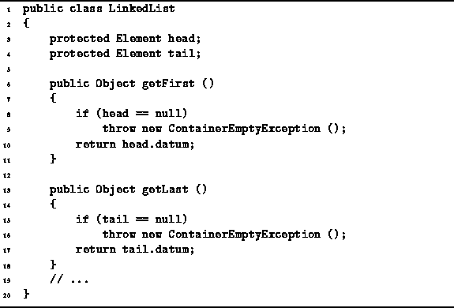

Data Structures and Algorithms
with Object-Oriented Design Patterns in Java
Data Structures and Algorithms
with Object-Oriented Design Patterns in Java
Two more LinkedList accessors are defined in Program  .
The getFirst method returns the first list element.
Similarly, the getLast method returns the last list element.
The code for both methods is almost identical.
In the event that the list is empty,
a ContainerEmptyException
exception is thrown.
.
The getFirst method returns the first list element.
Similarly, the getLast method returns the last list element.
The code for both methods is almost identical.
In the event that the list is empty,
a ContainerEmptyException
exception is thrown.

Program: LinkedList class getFirst and getLast methods.
We will assume that in a bug-free program, neither the getFirst nor the getLast methods will be called for an empty list. In that case, the running time of each of theses methods is constant. That is, T(n)=O(1).
 Copyright © 1998 by Bruno R. Preiss, P.Eng. All rights reserved.
Copyright © 1998 by Bruno R. Preiss, P.Eng. All rights reserved.